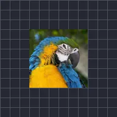

Tamanho pulsante

Aumenta e diminui a camada sem parar, em onda senoidal ou triangular.
O Tamanho do Pulso aumenta e diminui uma camada repetidamente. Diminuir e Aumentar são os tamanhos menor e maior como múltiplo do normal (0,9 é 90 %), Frequência é o número de pulsos por segundo e Onda é Seno (suave) ou Triangular. Um batimento cardíaco ou um logotipo sincronizado com a batida são usos típicos. Veja também Opacidade do Pulso.
Configurações
| Configuração | Tipo | Intervalo | Padrão |
|---|---|---|---|
| Frequência | Número | 0 Hz a 16 Hz | 2 Hz |
| Diminuir | Número | 0 a 1 | 0.9 |
| Aumentar | Número | 1 a 2 | 1.1 |
| Fase inicial | Número | 0 a 2 | 0 |
| Onda | Opção | Senoide, Triangular | Senoide |